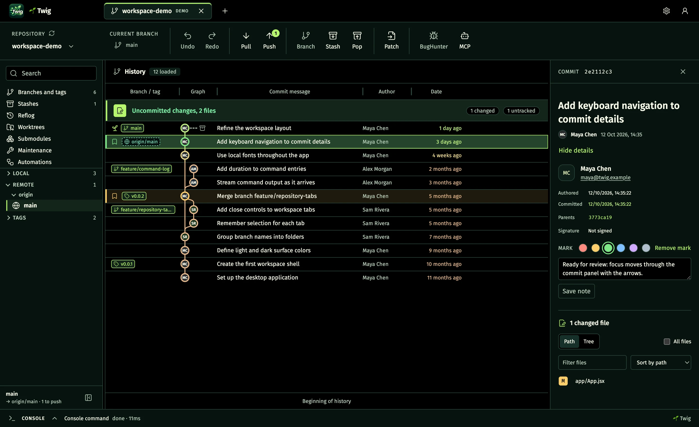

меньше токенов на «когда появился или исчез этот код?», чем у git log -S … -p.
GIT-КЛИЕНТ + MCP · v{{version}} · {{released}}
Git-клиент для вас
и вашего AI-агента.
Агент видит коммит,
который вы выделили.
Агент предлагает коммит.
Нажимаете вы.
Undo работает
и для его коммитов.
Граф, staging по строкам, rebase и Undo в одном окне. Claude Code, Codex и Cursor подключаются к тому же репозиторию через встроенный MCP: видят выделенное вами, тратят меньше токенов, а коммит только предлагают.
macOS · Windows · Linux Предварительная версия
Без аккаунта и телеметрииMCP выключен, пока вы не включитеЛокальный сокет, без сетевого портаМодель безопасности
ДЛЯ ВАС · GIT-КЛИЕНТ
Граф, изменения и команды рядом.
Все ветки и теги коммита видны по именам.

ПОЧЕМУ 🌱 TWIG
Агент тратит меньше токенов.
Последнее слово за вами.
Агент и так умеет звать git. 🌱 Twig даёт ему только то, что дешевле или чего у git нет. Замер на настоящих изменениях, токены считал Claude Opus 5.5.
на «кто и зачем менял эти строки»: −92…−95 % токенов против git blame и git log.
короче ответ на «что изменено?»: один вызов, сразу с числом строк.
| Задача | Агент с git | Агент с 🌱 Twig |
|---|---|---|
| «Объясни этот коммит» | Вы копируете хэш в чат | Видит, что выделено в окне |
| Lock-файл на 12 МБ | Весь дифф уходит в контекст | Одна строка: размер и команда, чтобы дочитать |
| Коммит и push | Запускает сам | Предлагает, Commit нажимаете вы, Undo работает |
| Что видно вам | Терминал агента | Каждый запрос виден в журнале 🌱 Twig с плашкой MCP |
ДЛЯ ВАС · ВОЗМОЖНОСТИ
Ежедневный Git
и трудные случаи.
Работает с вашим установленным Git: своего движка вместо него 🌱 Twig не подставляет.
- Каждая команда на видуТочная команда, папка, вывод, код и время видны в журнале. Запросы агента помечены MCP.
- Undo для GitКоммит, merge, cherry-pick, checkout, stash и даже discard: правки сначала копируются в Git.
- Проверки до commit и pushТесты, правила ветки и сообщения, поиск секретов без ручных хуков.
- Staging по строкамФайлы, ханки или отдельные строки. Дифф с номерами и правками внутри строки.
- Незакоммиченное деревомСписки по папкам, фильтр по имени и типу файла. Stage берёт только показанное.
- Где ваша веткаЕсли она отстала от remote или другой ветки, пунктир слева ведёт к её коммиту.
- Rebase по плануПорядок перетаскиванием, squash выделенных, новые сообщения до запуска.
- Конфликты в три колонкиВаша версия, база и их, а результат собирается построчно.
- Ветки перетаскиваниемMerge, rebase, cherry-pick или push, и команды видны до запуска.
- 🌱 BugHunterПошаговый
git bisect: какой коммит внёс баг. - Blame и история строкиВерсия до правки, reverse blame, история файла через переименования.
- Дифф картинокРядом, шторкой, наложением или разницей, с рамками вокруг изменений.
- ReflogПотерянные коммиты помечены, ветка восстанавливается под прежним именем.
- Поиск по всей историиПо сообщению, хэшу, автору, пути и коду (
-S,-G). - Марки и заметкиЦвет и текст на коммите хранятся только у вас, не в репозитории.
- Worktrees, сабмодули, LFSА ещё подписи коммитов, патчи, теги и обслуживание репозитория.
- Большие репозиторииИстория читается потоком: в замере 100 000 коммитов прочитаны за 0,75 с.
- Клавиши под себяЛюбое сочетание переназначается в Settings и работает в любой раскладке.
- Учебная песочницаНастоящий репозиторий с remote: пробуйте merge и rebase без риска.
- Обновления в один кликУстановщик сверяется с релизом по SHA‑256, сборка для macOS подписана и нотаризована.
Без аккаунта и телеметрии
Репозитории, марки и журнал остаются на компьютере. Сам 🌱 Twig ходит в сеть только за проверкой обновлений (её можно выключить) и за фоновым fetch, если вы его включили.
Полный список выпусков есть в CHANGELOG и на странице Releases.
MACOS / WINDOWS / LINUX / GENTOO
Скачать 🌱 Twig
MCP-сервер уже внутри, отдельно ставить ничего не нужно.
Демо-репозиторий открывается при первом запуске.
Версия {{version}}Предварительная версия
{{downloads}}
LINUX / GENTOO
Gentoo
Ebuild'ы в оверлее сообщества vitaly-zdanevich/gentoo-overlay (amd64, glibc). Его ведёт сообщество, версия в нём может отставать от последнего выпуска.
dev-vcs/twig-bin готовая сборка dev-vcs/twig сборка из исходников
eselect repository add vitaly-zdanevich-overlay git https://github.com/vitaly-zdanevich/gentoo-overlay.git
emaint sync -r vitaly-zdanevich-overlay
emerge -a twig-binНужен установленный Git. На Mac: Apple Silicon для чипов серии M, Intel для процессоров Intel.
Установка и подпись
Сборка для macOS подписана сертификатом Apple Developer ID и нотаризована, поэтому предупреждения «не удаётся проверить разработчика» не будет. Установщик Windows пока без цифровой подписи: SmartScreen может предупредить при первом запуске. Git устанавливается отдельно.
macOS: откройте .dmg и перенесите приложение в «Программы». Windows: запустите установщик .exe. Debian / Ubuntu: установите пакет .deb. Другие Linux: сделайте .AppImage исполняемым (chmod +x) и запустите: установка не нужна. Дальше обновления приходят в самом приложении.